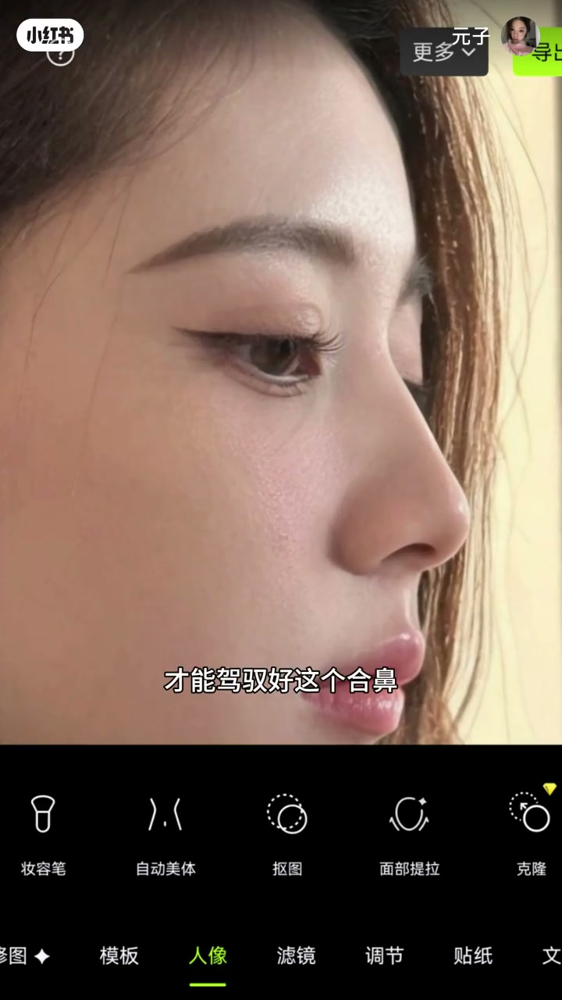
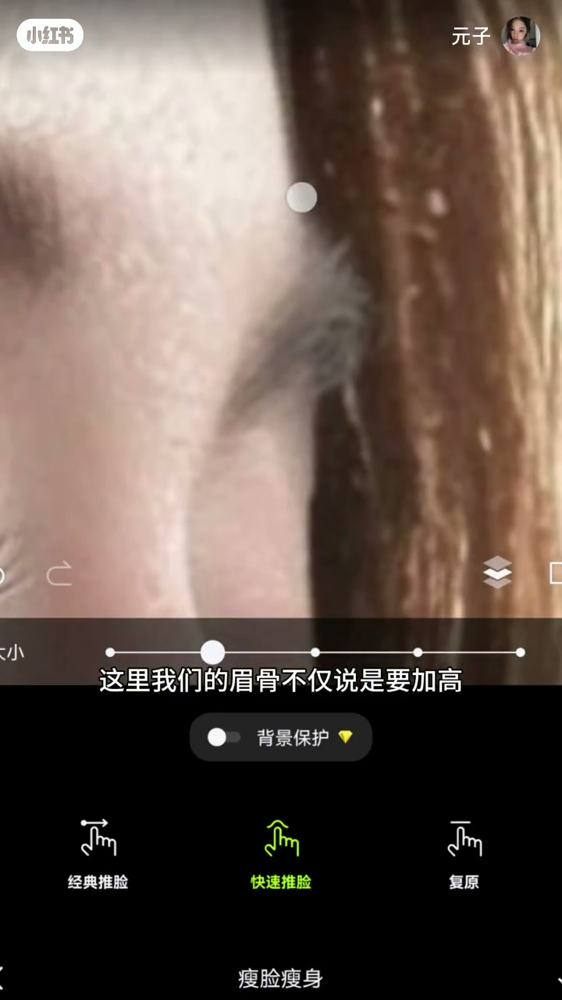
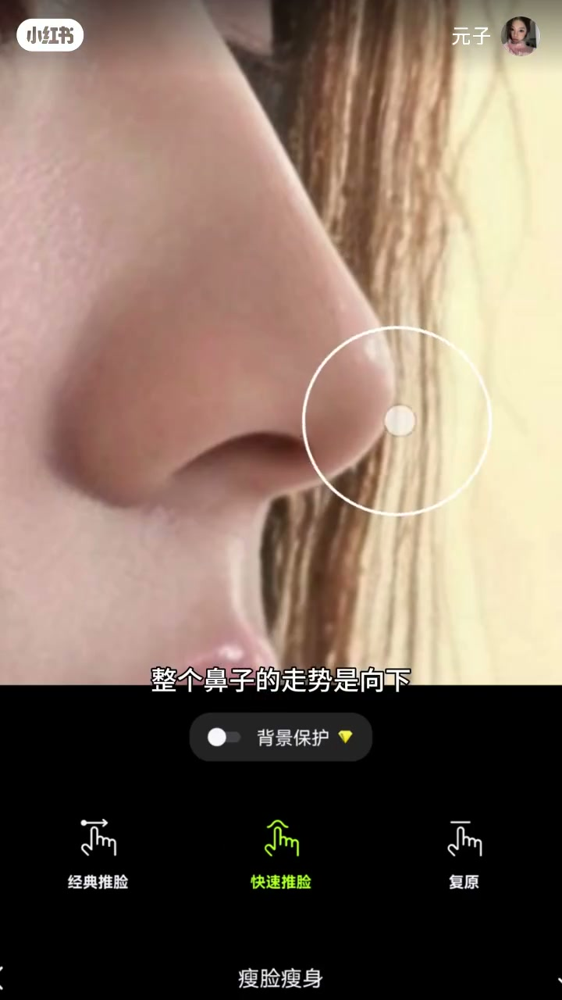
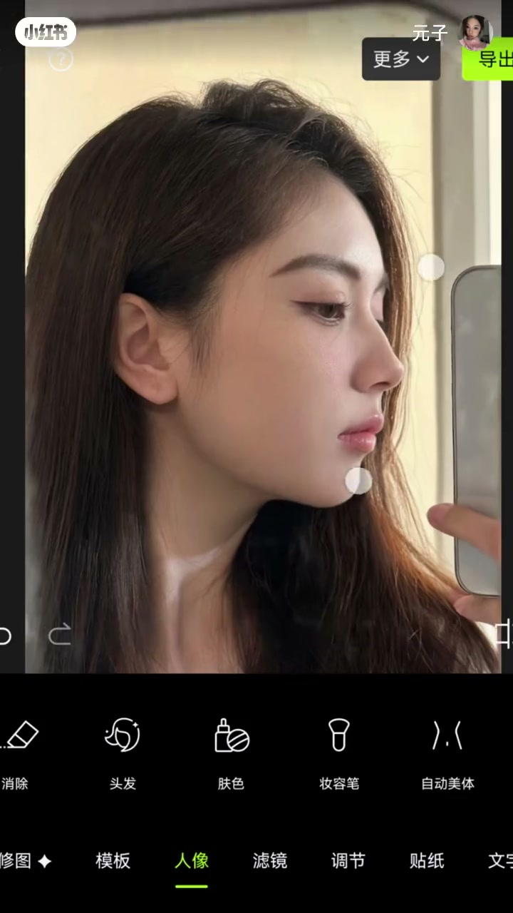
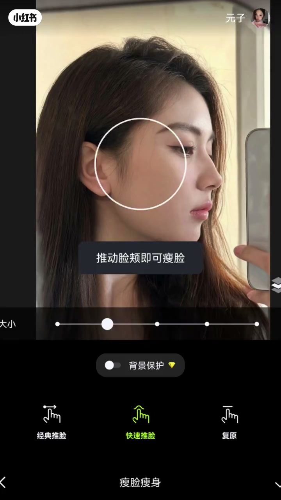
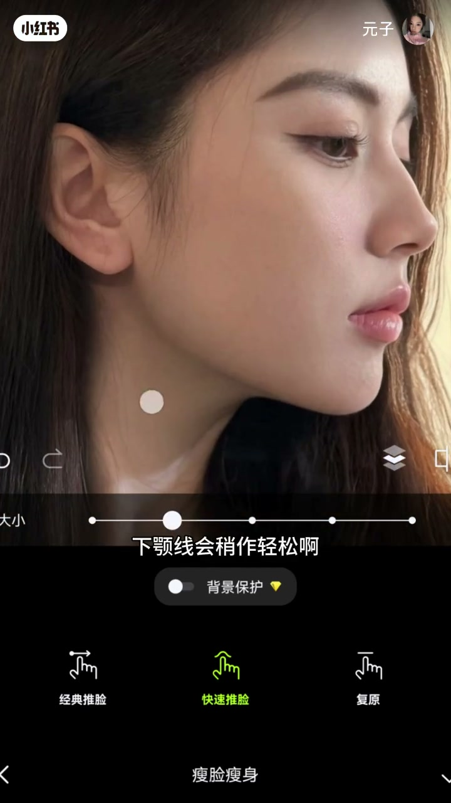

内容要点
UP 主卫静用美术视角拆解一个高难度设计命题：怎么让一张脸驾驭得了「顶级美鼻」？她先给出反面案例——一张原本驾驭不了顶鼻的脸，硬加只会扣分；要驾驭它，需要综合大量混合感元素。随后按山根与眉眼、鼻走势、面部骨像、下半张脸四个层次逐项讲解：山根区域必须有高低转折、眉骨要包住眼眶、眼头留白、鼻走势向下向上起抬、鼻翼光影下压、OG 线该薄则薄该厚则厚、下巴要往前而非往下。最后强调这套方案包含美术与美学知识，不能盲目跟风，要提前了解自己的脸。
知识结构
设计目标是能驾驭顶级美鼻的脸；原图驾驭不了，硬加顶鼻加不了分，需要大量混合感元素配合。
山根区域要高、要有好看的转折；眉弓完美优越、包住眼眶，眼头留白，双 C 加高塑造眼窝，眉尾往上走。
顶级鼻走势向下向上起抬、攻击性强，很多人驾驭不了；鼻翼向下压、不能圆钝。
OG 线原理：该薄的地方薄、该厚的地方厚；眶骨颧骨重塑高光点、面中打平、颧弓高光清晰内移、额头加一点亮感。
下巴要往前不是往下；下颏线处理更轻松；方案含美术与美学知识，不可盲目跟风，先了解自己的脸。
驾驭顶级美鼻需要整套面部骨像配合：山根高且转折好看、眉骨包眼眶并留白眼头、鼻走势有攻击性、鼻翼光影下压、OG 线该薄则薄该厚则厚、下巴往前而非往下。设计的本质是比例与光影的混合感，不是单个五官的堆砌；是否适合要基于自己真实脸型判断。
00:00-00:20命题：不是鼻子好不好看，是脸能不能驾驭
视频以命题开场：「这期的设计要求是，能驾驭顶级美鼻的脸。我理解的顶美，就是每一个五官状态都要达到顶级完美，而鼻子是最重点的。」
UP 主先给了一个反面案例：「先看这张脸，它肯定是驾驭不了顶鼻的——顶鼻一出来加不了分，没有变得很好看。要结合实际去加很多混合感元素，才能驾驭好这个顶鼻。」这句话奠定了全片的方法论：不是单点追求鼻子，而是让整张脸的骨像与光影形成混合感。

00:20-01:36山根与眉眼：转折、包住与留白
第一个区域是山根：「山根这个高低起伏落差的混合感一定要打造出来。这个区域想要有混合感就必须高，通天都可以，但必须要有那种好看的转折。」
同时必须搭配非常完美优越的眉弓：「眉骨有些时候不需要往上去做，但一定要起到包住眼眶的作用。」山根旁边、眼头这个位置要留白；眼窝则通过把眉骨加立体度塑造出来，「它和我们那种眼窝线是不一样的」。「整个眉骨的打造一定要看侧面整个眼窝和眉骨的曲线——眉骨不仅是要加高，而且连着额头、连着眼睛，这种混合感需要稍微往下有一点点压的力，不能直直地往上抬，否则五官不集中、不够混合感。」这个「压的力」通过双 C 的加高来表现，眉尾的位置一定是往上走的。

01:36-02:10鼻走势与光影：有攻击性的气势
进入鼻本身的设计：「真正的顶鼻，整个鼻子的走势是向下、向上起抬的，整个走势是非常有攻击性的，鼻子的气势非常强，所以很多人是不好驾驭顶鼻的，很多面孔驾驭不了。」鼻基底的位置要稍作调整跟上，鼻小柱的支撑性要强，鼻孔这个位置稍微被拉扯。
光影部分：「鼻翼的整个位置需要向下压，鼻翼不可以非常圆钝。」达到这个程度以后再给光影补充好。

02:10-02:53面部骨像：OG 线原理与高光点的重塑
接下来是面部骨像的打造，UP 主点出核心原理 OG 线：「它的原理就是，该薄的地方薄，该厚的地方要加厚。」
具体操作：「首先整个眶骨是跟不上的，所以眶外包括颧骨的位置都需要重新塑造高光点；面中需要打得平一些（原来的面中太过饱满了）；眼下也有呼吸感——如果你喜欢骨像状态，脸是不需要有多饱满的。颧弓的高光点最好塑造得清晰一些、内移——该薄的薄、该厚的厚，在可调的范围内尽量明显。额头最好再加一点点亮感，但不能加太多，太多也不好实现。」

02:53-03:35下半张脸：下巴往前，而不是往下
UP 主强调下半张脸「真的太重要了」：「下巴是需要往前的。这就是为什么你脸上扎的东西达不到这种效果——因为它的走势不是需要往下，是需要往前。」
嘴巴配合着调整一下；如果喜欢性感的风格，可以在特定位置加一点点饱满的肉，再和下巴的转折位置配合，会很好看。「有了这么高级的下巴，下颏线处理起来会稍微轻松一些。」最后她总结：这套方案里包含了很多美术和美学的知识，「不可以盲目跟风，要提前对自己的脸有一定的了解」。


完整转录（90段）
以下文本由 Whisper medium 模型自动转录，可能存在少量识别误差，已尽可能修正。
这期小姐的设计要求是能驾驭河鼻顶美的脸
我理解的顶美就是每一个五官状态都要达到顶级完美
还是啊 鼻子是最重点的
首先先看这张脸
它肯定是驾驭不了河鼻
河鼻一出来 加不了分
没有变得很好看 对吧
OK 要结合实际的去加很多浑血元素
才能驾驭好这个河鼻
首先山根这个高低起伏落差的浑血感一定要打造出来
用美术工地去画一下
这个区域想要有浑血感就必须高
通天都可以 但是必须要有那种好看的转折
而且要搭配上非常完美优越的眉弓
眉骨有些时候不需要往上去做
但是一定要起到包住眼眶的作用
然后山根不一块 眼头这个位置要留白
眼窝这个位置我们通过把眉骨
加立体度把眼窝塑造出来
它和我们那种眼窝线是不一样的效果
然后整个眉骨的打造
大家一定要看侧面整个眼窝和眉骨的这个曲线
这里我们的眉骨不仅说是要加高
而且连着额头 连着眼睛
这种浑血感是需要稍微往下有一点点压的力的
不能直直的往上抬
那么五官就不集中就不够浑血感
这个压的力我们就通过双C的加高来表现
然后这个眉骨也是
我们通过双C加高来去表现
然后眉尾的位置一定是往上走的
眉骨的眉尾
看一下现在的这个整个山根和眉眼的设计
接下来是合笔的设计
真正的合笔整个鼻子的走势是向下向上往起抬
整个走势是非常有攻击性的
整个鼻子的气势是非常强的
所以很多人他是不好驾驭的
很多面孔他是不好驾驭合笔的
同时肌底的位置要稍作调整跟上
然后鼻小处的支撑性很强
鼻孔这个位置是稍微被拉扯
达到这个程度以后再给光影给大家补充好
光影的话
鼻翼的整个位置需要向下压
鼻翼不可以非常圆盾
大概是这个状态
接下来就是面部骨像的打造
包括OG线
它的原理就是该薄的地方薄
该厚的地方要加厚
首先整个框骨是跟不上的
所以框外包括全骨的位置
我们都是需要重新塑造高光点
面中需要打的平一些
原来的面中太过饱满了
眼下也有呼吸感
如果你喜欢骨像状态
脸是不需要有多饱满的
然后框骨也是如此
然后全弓的高光点
最好是塑造的清晰一些内移
怎么内移就是该薄的薄
该厚的厚
在可调的范围内尽量去明显
之后额头最好是再加一点点亮感
不能加太多
太多也不好实现
然后就是下半张脸真的太重要了
下巴是需要往前的
这个就是为啥你脸上扎的东西
达不到这种效果
因为它的走势不是需要往下
是需要往前
然后嘴巴就是依然是配合着调整一下
如果你喜欢有性感的风格
在这个位置
加一点点饱满的肉
之后下巴这个转折的位置配合上
很好看
两者相配合
很好看
然后有了这么高级的下巴
下颗线会稍作轻松
下颗线会处理起来会更加轻松一些
最后来看一下变化
给大家设计的方案里面包含了很多
美术和美学的知识
不可以盲目跟风
要提前对自己的脸有一定了解